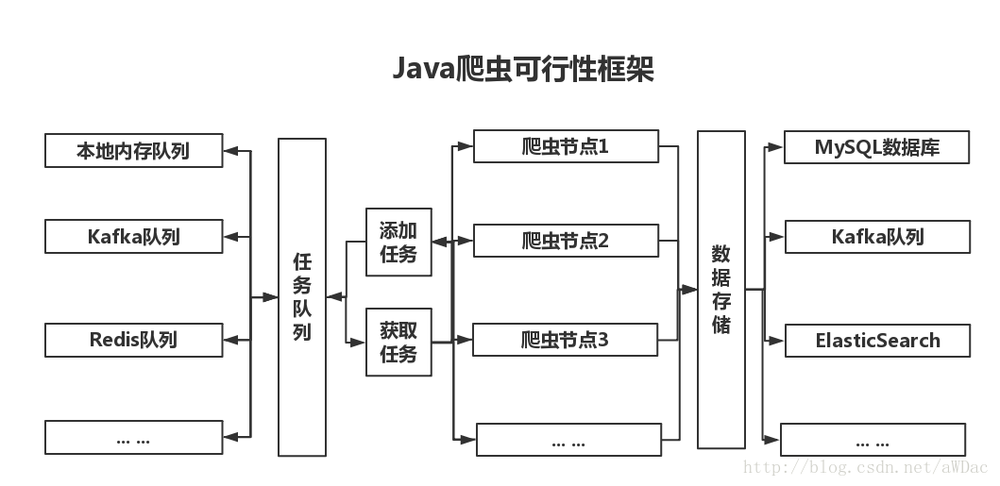

<!DOCTYPE html><html lang="zh-CN"><head>
  <meta charset="UTF-8">
  <link rel="apple-touch-icon" sizes="76x76" href="/img/favicon.png">
  <link rel="icon" type="image/png" href="/img/favicon.png">
  <meta name="viewport" content="width=device-width, initial-scale=1.0, maximum-scale=1.0, user-scalable=no, shrink-to-fit=no">
  <meta http-equiv="x-ua-compatible" content="ie=edge">
  
  <meta name="theme-color" content="#2f4154">
  <meta name="description" content="">
  <meta name="author" content="xinshiyou">
  <meta name="keywords" content="">
  <title>一种可行性Java爬虫框架 - 星空捞月：找寻心中的安宁</title>

  


  
  

  
    
  

  


<!-- 主题依赖的图标库，不要自行修改 -->


<!-- 自定义样式保持在最底部 -->


  
<meta name="generator" content="Hexo 4.2.1"><link rel="alternate" href="/atom.xml" title="星空捞月：找寻心中的安宁" type="application/atom+xml">
<script>function loadCss(l){var d=document,h=d.head,s=d.createElement('link');s.rel='stylesheet';s.href=l;!function e(f){if (d.body)return f();setTimeout(function(){e(f)})}(function(){h.appendChild(s);});}loadCss('/style.css');loadCss('https://cdn.staticfile.org/twitter-bootstrap/4.4.1/css/bootstrap.min.css');loadCss('https://cdn.staticfile.org/github-markdown-css/4.0.0/github-markdown.min.css');loadCss('https://cdn.staticfile.org/highlight.js/10.0.0/styles/github-gist.min.css');loadCss('//at.alicdn.com/t/font_1749284_yg9cfy8wd6.css');loadCss('//at.alicdn.com/t/font_1736178_pjno9b9zyxs.css');loadCss('https://cdn.staticfile.org/fancybox/3.5.7/jquery.fancybox.min.css');</script><noscript><link rel="stylesheet" href="/style.css"><link rel="stylesheet" href="https://cdn.staticfile.org/twitter-bootstrap/4.4.1/css/bootstrap.min.css"><link rel="stylesheet" href="https://cdn.staticfile.org/github-markdown-css/4.0.0/github-markdown.min.css"><link rel="stylesheet" href="https://cdn.staticfile.org/highlight.js/10.0.0/styles/github-gist.min.css"><link rel="stylesheet" href="//at.alicdn.com/t/font_1749284_yg9cfy8wd6.css"><link rel="stylesheet" href="//at.alicdn.com/t/font_1736178_pjno9b9zyxs.css"><link rel="stylesheet" href="https://cdn.staticfile.org/fancybox/3.5.7/jquery.fancybox.min.css"></noscript></head>


<body>
  <header style="height: 70vh;">
    <nav id="navbar" class="navbar fixed-top  navbar-expand-lg navbar-dark scrolling-navbar">
  <div class="container">
    <a class="navbar-brand" href="/">&nbsp;<strong>星空捞月：找寻心中的安宁</strong>&nbsp;</a>

    <button id="navbar-toggler-btn" class="navbar-toggler" type="button" data-toggle="collapse" data-target="#navbarSupportedContent" aria-controls="navbarSupportedContent" aria-expanded="false" aria-label="Toggle navigation">
      <div class="animated-icon"><span></span><span></span><span></span></div>
    </button>

    <!-- Collapsible content -->
    <div class="collapse navbar-collapse" id="navbarSupportedContent">
      <ul class="navbar-nav ml-auto text-center">
        
          
          
          
          
            <li class="nav-item">
              <a class="nav-link" href="/">
                <i class="iconfont icon-home-fill"></i>
                首页
              </a>
            </li>
          
        
          
          
          
          
            <li class="nav-item">
              <a class="nav-link" href="/archives/">
                <i class="iconfont icon-archive-fill"></i>
                归档
              </a>
            </li>
          
        
          
          
          
          
            <li class="nav-item">
              <a class="nav-link" href="/categories/">
                <i class="iconfont icon-category-fill"></i>
                分类
              </a>
            </li>
          
        
          
          
          
          
            <li class="nav-item">
              <a class="nav-link" href="/tags/">
                <i class="iconfont icon-tags-fill"></i>
                标签
              </a>
            </li>
          
        
          
          
          
          
            <li class="nav-item">
              <a class="nav-link" href="/about/">
                <i class="iconfont icon-user-fill"></i>
                关于
              </a>
            </li>
          
        
        
          <li class="nav-item" id="search-btn">
            <a class="nav-link" data-toggle="modal" data-target="#modalSearch">&nbsp;&nbsp;<i class="iconfont icon-search"></i>&nbsp;&nbsp;</a>
          </li>
        
      </ul>
    </div>
  </div>
</nav>

    <div class="view intro-2" id="background" parallax="true" style="background: url('/img/top.jpeg') no-repeat center center;
           background-size: cover;">
      <div class="full-bg-img">
        <div class="mask flex-center" style="background-color: rgba(0, 0, 0, 0.3)">
          <div class="container text-center white-text fadeInUp">
            <span class="h2" id="subtitle">
              
            </span>

            
              
  <div class="mt-3 post-meta">
    <i class="iconfont icon-date-fill" aria-hidden="true"></i>
    <time datetime="2018-06-29 16:52">
      2018年6月29日 下午
    </time>
  </div>


<div class="mt-1">
  
    
    <span class="post-meta mr-2">
      <i class="iconfont icon-chart"></i>
      242 字
    </span>
  

  
    
    <span class="post-meta mr-2">
      <i class="iconfont icon-clock-fill"></i>
      
      
      2
       分钟
    </span>
  

  
  
</div>

            
          </div>

          
        </div>
      </div>
    </div>
  </header>

  <main>
    
      

<div class="container-fluid">
  <div class="row">
    <div class="d-none d-lg-block col-lg-2"></div>
    <div class="col-lg-8 nopadding-md">
      <div class="container nopadding-md" id="board-ctn">
        <div class="py-5" id="board">
          <div class="post-content mx-auto" id="post">
            
            <article class="markdown-body">
              <p>  简单的Java爬虫框架流程图，不包括容灾机制、异常处理等内容。</p>
<a id="more"></a>
<h2 id="框架流程图"><a href="#框架流程图" class="headerlink" title="框架流程图"></a>框架流程图</h2><p></p>
<p>  搭建分布式爬虫系统，框架的主要工作是打通队列、存储之间的联系。之后的工作，包括爬虫策略、容灾机制、错误处理等，都是通过爬虫节点来处理。<br>  事实上，只要框架搭建好之后，不断完善本地爬虫策略【使用内存队列】，就能够很好的实现分布式爬虫。</p>
<h2 id="爬虫节点"><a href="#爬虫节点" class="headerlink" title="爬虫节点"></a>爬虫节点</h2><p>爬虫节点设计的主要内容，包括但不限于：</p>
<pre><code>1. 爬虫深度；
2. 爬虫策略；
3. 爬虫方式；
4. 内容解析；
5. 错误异常处理机制；
6. 多线程处理.
</code></pre><p>等内容。<br></p>
<h2 id="主要框架"><a href="#主要框架" class="headerlink" title="主要框架"></a>主要框架</h2><p>目前比较完善的Java爬虫框架，主要包括</p>
<pre><code>1. WebCollector，主要用于单机模式；
2. WebMagic，易于扩展，能够实现分布式爬虫策略。
</code></pre>
            </article>
            <hr>
            <div>
              <div class="post-metas mb-3">
                
                  <div class="post-meta mr-3">
                    <i class="iconfont icon-category"></i>
                    
                      <a class="hover-with-bg" href="/categories/%E7%88%AC%E8%99%AB/">爬虫</a>
                    
                  </div>
                
                
                  <div class="post-meta">
                    <i class="iconfont icon-tags"></i>
                    
                      <a class="hover-with-bg" href="/tags/%E8%AE%BE%E8%AE%A1/">设计</a>
                    
                  </div>
                
              </div>
              
                <p class="note note-warning">本博客所有文章除特别声明外，均采用 <a href="https://creativecommons.org/licenses/by-sa/4.0/deed.zh" target="_blank" rel="nofollow noopener noopener">CC BY-SA 4.0 协议</a> ，转载请注明出处！</p>
              
              
                <div class="post-prevnext row">
                  <div class="post-prev col-6">
                    
                    
                      <a href="/2018/06/29/JXL%E7%AE%80%E5%8D%95%E6%93%8D%E4%BD%9Cxls%E8%A1%A8%E6%A0%BC%E6%96%87%E4%BB%B6-%E5%86%99%E5%85%A5%E6%96%87%E4%BB%B6/">
                        <i class="iconfont icon-arrowleft"></i>
                        <span class="hidden-mobile">JXL简单操作xls表格文件--写入文件</span>
                        <span class="visible-mobile">上一篇</span>
                      </a>
                    
                  </div>
                  <div class="post-next col-6">
                    
                    
                      <a href="/2018/06/29/%E5%88%A4%E6%96%ADGPS%E7%9C%81%E5%B8%82-%E5%8C%BA%E5%8E%BF%E9%9D%9EAPI%E8%B0%83%E7%94%A8%E6%96%B9%E6%B3%95/">
                        <span class="hidden-mobile">判断GPS省市/区县非API调用方法</span>
                        <span class="visible-mobile">下一篇</span>
                        <i class="iconfont icon-arrowright"></i>
                      </a>
                    
                  </div>
                </div>
              
            </div>

            
          </div>
        </div>
      </div>
    </div>
    
      <div class="d-none d-lg-block col-lg-2 toc-container" id="toc-ctn">
        <div id="toc">
  <p class="toc-header"><i class="iconfont icon-list"></i>&nbsp;目录</p>
  <div id="tocbot"></div>
</div>

      </div>
    
  </div>
</div>

<!-- Custom -->


    
  </main>

  
    <a id="scroll-top-button" href="#" role="button">
      <i class="iconfont icon-arrowup" aria-hidden="true"></i>
    </a>
  

  
    <div class="modal fade" id="modalSearch" tabindex="-1" role="dialog" aria-labelledby="ModalLabel" aria-hidden="true">
  <div class="modal-dialog modal-dialog-scrollable modal-lg" role="document">
    <div class="modal-content">
      <div class="modal-header text-center">
        <h4 class="modal-title w-100 font-weight-bold">搜索</h4>
        <button type="button" id="local-search-close" class="close" data-dismiss="modal" aria-label="Close">
          <span aria-hidden="true">×</span>
        </button>
      </div>
      <div class="modal-body mx-3">
        <div class="md-form mb-5">
          <input type="text" id="local-search-input" class="form-control validate">
          <label data-error="x" data-success="v" for="local-search-input">关键词</label>
        </div>
        <div class="list-group" id="local-search-result"></div>
      </div>
    </div>
  </div>
</div>
  

  

  

  <footer class="mt-5">
  <div class="text-center py-3">
    <div>
      <a href="https://hexo.io" target="_blank" rel="nofollow noopener"><span>Hexo</span></a>
      <i class="iconfont icon-love"></i>
      <a href="https://github.com/fluid-dev/hexo-theme-fluid" target="_blank" rel="nofollow noopener">
        <span>Fluid</span></a>
    </div>
    

    

    
  </div>
</footer>

<!-- SCRIPTS -->
<script src="https://cdn.staticfile.org/jquery/3.4.1/jquery.min.js"></script>
<script src="https://cdn.staticfile.org/twitter-bootstrap/4.4.1/js/bootstrap.min.js"></script>


<!-- Plugins -->


  
    
  


  <script defer="" src="https://cdn.staticfile.org/clipboard.js/2.0.6/clipboard.min.js"></script>
  


  <script src="https://cdn.staticfile.org/tocbot/4.11.1/tocbot.min.js"></script>
  


  <script src="https://cdn.staticfile.org/typed.js/2.0.11/typed.min.js"></script>
  


  <script src="https://cdn.staticfile.org/anchor-js/4.2.2/anchor.min.js"></script>
  


  
  


  <script src="https://cdn.staticfile.org/fancybox/3.5.7/jquery.fancybox.min.js"></script>
  

  


<script src="/bundle.js"></script><script>
    $(document).ready(function () {
      var boardCtn = $('#board-ctn');
      var boardTop = boardCtn.offset().top;

      tocbot.init({
        tocSelector: '#tocbot',
        contentSelector: 'article.markdown-body',
        headingSelector: 'h1,h2,h3,h4,h5,h6',
        linkClass: 'tocbot-link',
        activeLinkClass: 'tocbot-active-link',
        listClass: 'tocbot-list',
        isCollapsedClass: 'tocbot-is-collapsed',
        collapsibleClass: 'tocbot-is-collapsible',
        collapseDepth: 0,
        scrollSmooth: true,
        headingsOffset: -boardTop
      });
      if ($('.toc-list-item').length > 0) {
        $('#toc').css('visibility', 'visible');
      }
    });
  ;

    var typed = new Typed('#subtitle', {
      strings: [
        '  ',
        "一种可行性Java爬虫框架&nbsp;",
      ],
      cursorChar: "_",
      typeSpeed: 70,
      loop: false,
    });
    typed.stop();
    $(document).ready(function () {
      $(".typed-cursor").addClass("h2");
      typed.start();
    });
  ;

    anchors.options = {
      placement: "right",
      visible: "hover",
      
    };
    var el = "h1,h2,h3,h4,h5,h6".split(",");
    var res = [];
    for (item of el) {
      res.push(".markdown-body > " + item)
    }
    anchors.add(res.join(", "))
  ;

    var path = "/local-search.xml";
    var inputArea = document.querySelector("#local-search-input");
    inputArea.onclick = function () {
      searchFunc(path, 'local-search-input', 'local-search-result');
      this.onclick = null
    }
  ;

    $('#post img:not(.no-zoom img, img[no-zoom]), img[zoom]').each(
      function () {
        var element = document.createElement('a');
        $(element).attr('data-fancybox', 'images');
        $(element).attr('href', $(this).attr('src'));
        $(this).wrap(element);
      }
    );
  </script></body></html>